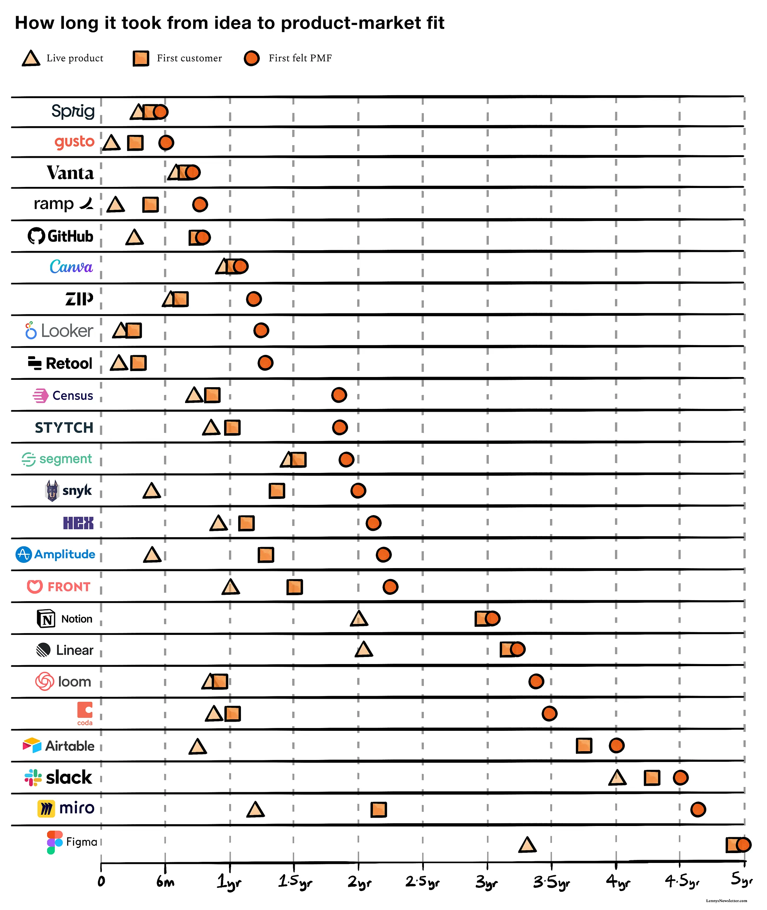
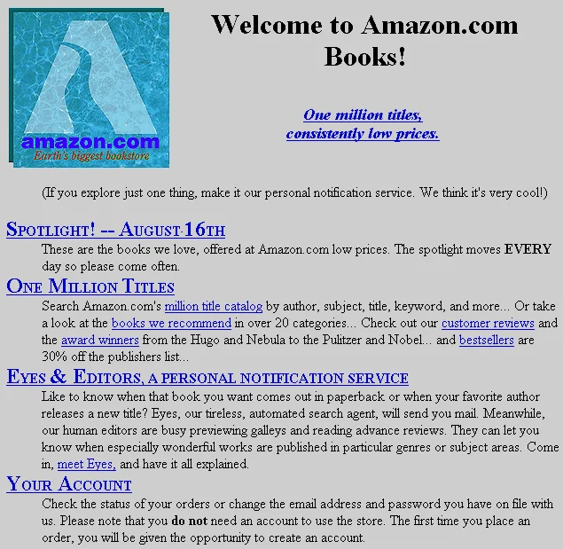

Why Launch
Why you should launch early and often
Most founders launch too late.
Before diving into the "how," you need to understand the "why." If you've done customer discovery properly, you should know two things: who your ideal customer is and what problem you're solving for them. The next step is figuring out the right product to solve that problem. Launching is how you do this.
Founders often tell me they're hesitant to launch. Their rationale has a few flavors to it.
"We only have ONE chance to launch."
Founders are often worried about screwing up their one shot to launch.
If you're afraid to launch, it's likely because you fear rejection. You fear people might not like your product, or worse, ignore it completely. The truth is, early rejection isn't failure — it's data. It's actually a sign you're on the verge of learning something valuable.
The key point to internalize is that "launching" is not a big-bang, one-time event. Startups can and will launch multiple times over the course of their lifetime. Every new feature, every pricing change, every user case study is an opportunity for you to communicate why what you're building matters and why customers should care.
Nearly all of the massive companies you know today had a time-lag between when they first launched and when they felt true product-market fit. Within that gap, there were multiple rounds of feedback from customers, which informed how to iterate on the product to get closer to PMF.
As two notable examples, Figma and Miro had multi-year gaps between their first releases and PMF.
 Time from first launch to PMF for well-known companies. Via Lenny's Newsletter.As with all rules, there are exceptions. Vanta hit clear PMF very close to their first live product. This is because Christina, the founder and CEO, spent a great deal of time deeply understanding the requirements to become SOC-2 compliant. For the first few customers, she took the wizard-of-oz approach and served them entirely manually using spreadsheets on the backend. By the time the company invested effort to automate her workflow, it was extremely clear what the product should be. Via Lenny's Newsletter and First Round Review
"Our product isn't ready."
The second most common objection I hear from founders is that the product is so early that any feedback received won't be relevant to the eventual amazing product that is just around the corner. This is a fallacy.
Your objective in your first product launch is to prove that your product is of value to anyone at all. The faster you can prove or disprove this, the faster you can make a decision on whether to keep going or to switch directions.
When Amazon first launched, it was extremely simple — a catalog of manually curated books that people could purchase. This was enough value to test the hypothesis of whether an online bookstore was valuable to anyone.
 Amazon's original homepage — simple enough to test a hypothesis.
A second related point is that founders often underestimate how quickly they can truly move. History has a long set of examples of small teams under extreme constraints that were able to accomplish truly remarkable feats:
- Unix: Ken Thompson wrote the first version in three weeks.
- Apollo 8: On August 9, 1968, NASA decided that Apollo 8 should go to the moon. It launched on December 21, 1968 — 134 days later.
- BankAmericard: Dee Hock was given 90 days to launch the BankAmericard (which became the Visa card), starting from scratch. He signed up more than 100,000 customers in that time.
More examples on Patrick Collison's list of things built quickly.
As a founder, your own energy is the most precious resource you have. The faster you ship, the more you can learn and the more the momentum compounds. Shipping quickly gives you and the team energy to pull off feats that may seem impressive in retrospect.
"We won't find our ICP by launching. Direct outreach is a better approach."
This is a false dichotomy. Smart founders don't choose between launching and direct outreach — they do both.
When you reach out to potential customers, the first thing they'll do is look you up. What will they find? If you haven't launched, probably nothing.
Having launched gives you legitimacy. It demonstrates that you're serious enough to put something into the world, however imperfect. A clear landing page with coherent messaging and a basic demo will make you look 10x more credible than a founder who is "still getting ready to launch."
Most successful startups didn't find their initial users through some grand launch. They scrapped and hustled. They personally emailed potential users. They did customer support themselves. They showed up where their users were.
But they also launched. Because launching isn't just about finding users — it's about forcing yourself to articulate what you're building and why anyone should care.
Ok, I'm still not convinced. What do I get by launching?
Launching your startup early forces you to confront reality. You expose your product to real-world feedback, which helps you iterate quickly and find product-market fit. It shifts your focus from abstract perfection to solving actual problems for real users.
Early launches may be imperfect, but they teach you more in a few days than months of speculation ever could. You quickly gather:
- Qualitative feedback — direct conversations with users about what works and what doesn't
- Quantitative signal — real usage data on what people actually do with your product
- Access to early adopters — the people willing to try something rough are your most valuable allies
- Traction for fundraising — even modest usage numbers tell a stronger story than a pitch deck alone
When to launch
You should launch when you have:
- A clear idea of who your initial users are
- A product that delivers the core value, even if crudely
- The ability to explain what you do in a sentence
- Somewhere for users to go — even if it's just an email signup form
The startups that win aren't the ones that launch perfectly, but the ones that launch quickly and iterate relentlessly. Most founders wait too long. They build elaborate products that no one wants instead of simple products that some people need desperately.
Your first version will be bad. Launch it anyway.